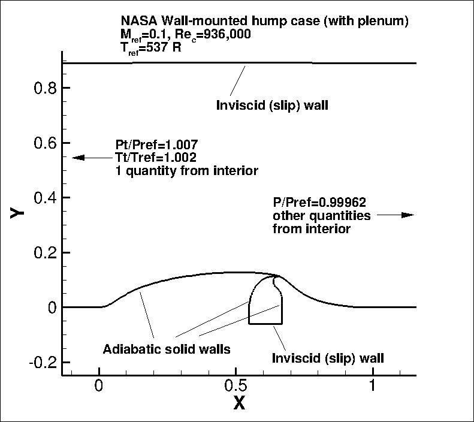
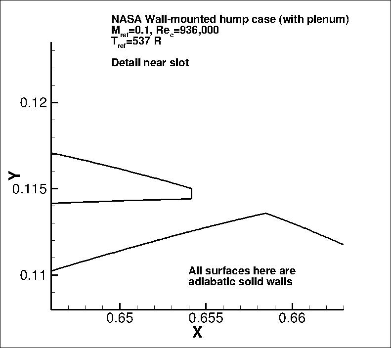
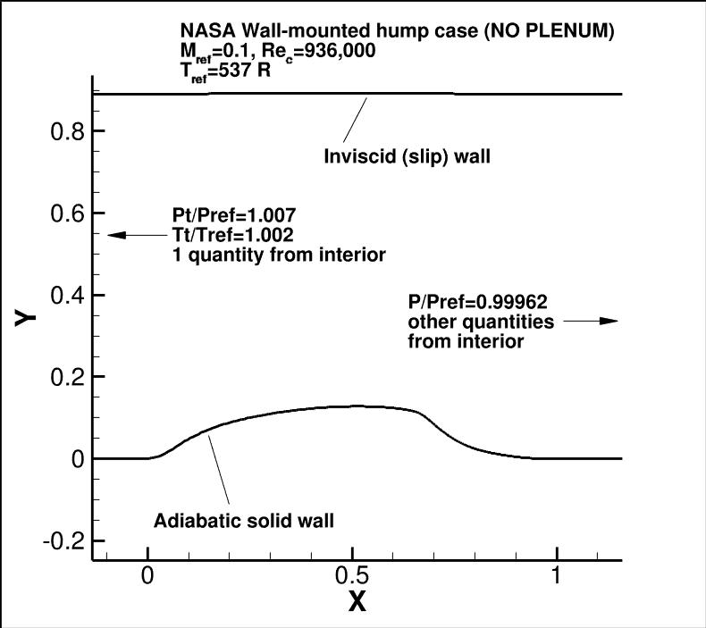
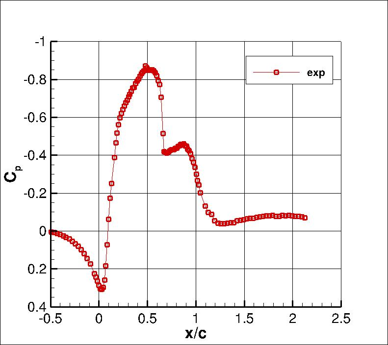
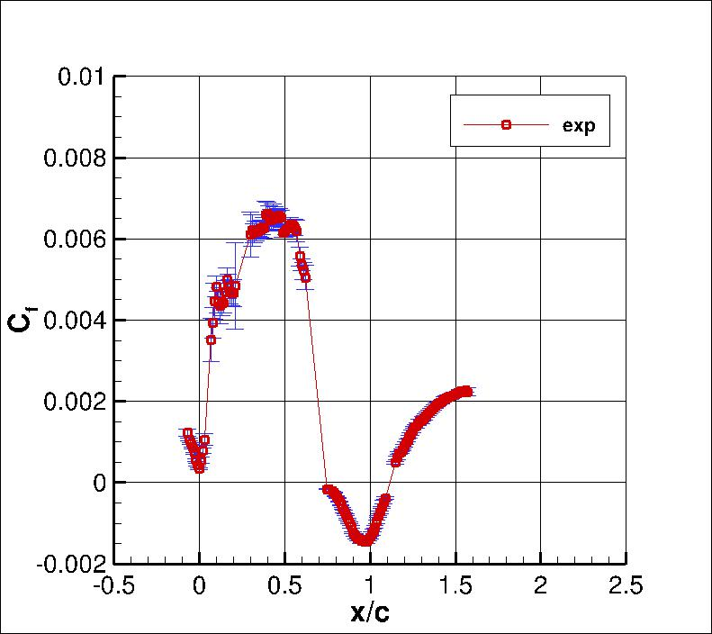
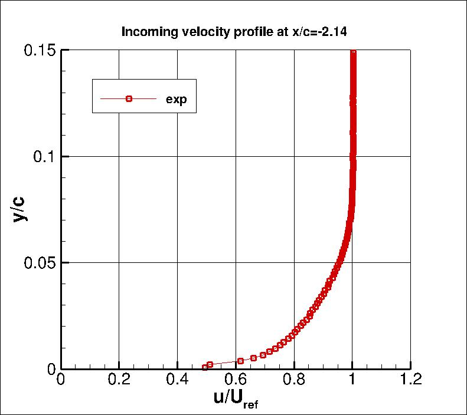
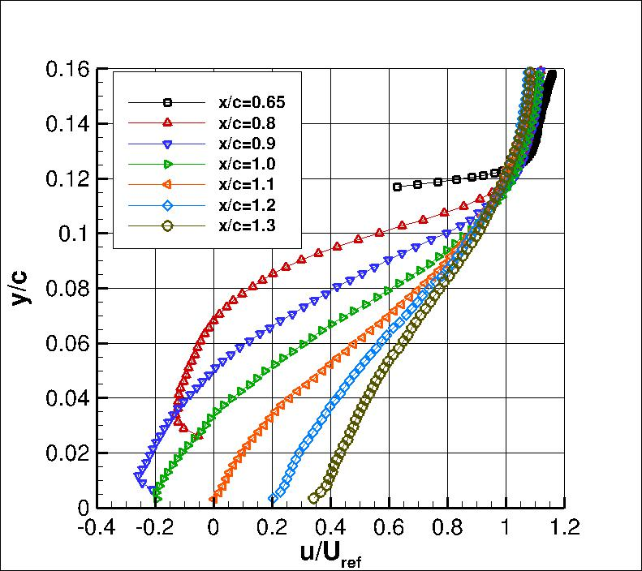
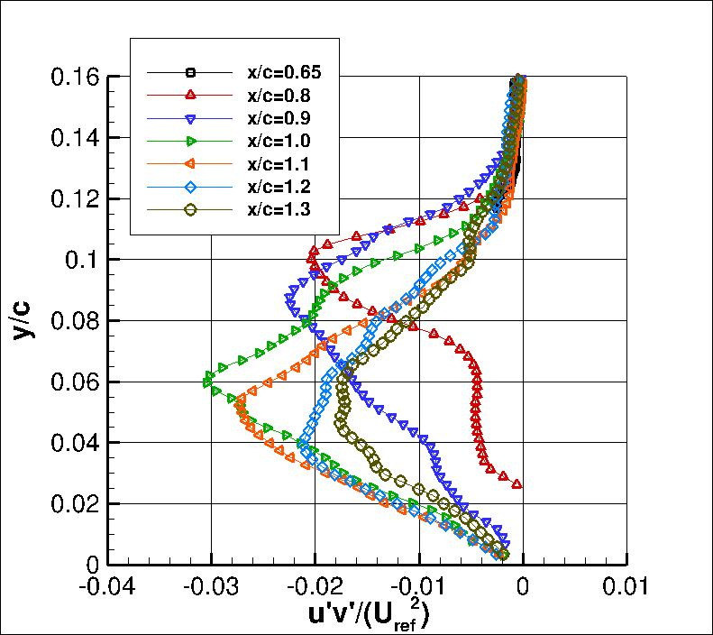
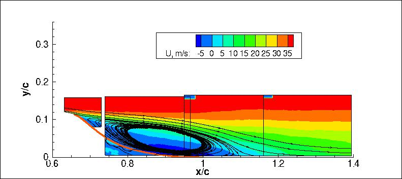

Public Access (formerly Langley Research Center)Turbulence Modeling Resource |
Return to: Turbulence Modeling Resource Home Page
2DWMH: 2D NASA Wall-Mounted Hump Separated Flow Validation Case
The purpose here is to provide a
validation case for turbulence models. Unlike verification, which seeks to
establish that a model has been implemented correctly, validation compares
CFD results against data in an effort to establish a model's ability to
reproduce physics. This case is "Case 3" from the
NASA CFDVAL2004 Workshop.
At this time, for consistency, the same set of best-practice structured grids are provided here that
were used at the workshop. As such, they also include the interior chamber and flow-control slot.
However, for the purposes of this particular no-flow-control validation case, there is no mass flow through the
bottom chamber wall.
Experimental data are provided here for comparison from from Greenblatt et al.
The experiment is described in detail at the
NASA CFDVAL2004 Workshop webpage.
It is a Wall-mounted Glauert-Goldschmied type body, geometrically similar to that employed by Seifert and Pack
(AIAA Journal, Vol. 40, No. 7, July 2002, pp. 1363-1372,
https://doi.org/10.2514/2.1796).
Full details of the current case are given in the references
listed below. The model is mounted between two glass endplate frames and both leading edge and trailing edges
are faired smoothly with a wind tunnel splitter plate. This is a nominally two-dimensional experiment, treated as
such for the CFD validation.
The primary focus of this case is to assess the ability of turbulence models to
predict 2-D separation from a smooth body (caused by adverse pressure gradient) as well as
subsequent reattachment and boundary layer recovery.
Since its introduction, this particular case (as well as its sister cases with flow control)
has proved to be a challenge for all known RANS
models. Models tend to underpredict the turbulent shear stress in the separated shear layer,
and therefore tend to predict too long a separation bubble.
For this case, the reference freestream velocity is approximately 34.6 m/s (M=0.1).
Incoming fully turbulent boundary layer thickness at position x/c=-2.14 is approximately 35 mm, or about 8%c
(the bump "chord" is 420 mm).
The back pressure is chosen to achieve the desired flow. The upstream
"run" length is chosen to allow the fully turbulent boundary layer
to develop naturally, and achieve approximately the correct boundary layer thickness
upstream of the hump. The upper
boundary is modeled in the CFD as an inviscid (slip) wall, and it includes a contour to its shape to
approximately account for the blockage caused by the end plates in the experiment.
This case can be run either with or without the plenum (the plenum was present in the experiment, but
for the no-flow-control case, it is not crucial to include).
The original grids from the CFDVAL2004 workshop included the plenum; they are provided in the first grid link below.
A new set of grids has also been created without the plenum; they are provided in the second grid link below.
The following plots show the layout of this case, along with the boundary conditions.
"Pt" refers to total pressure, "P" refers to
static pressure, and "Tt" refers to total temperature.
The Reynolds number for this case is the same as that used for the 2004 workshop: 936,000. Note that
this differs slightly from the Reynolds number in the Greenblatt et al reference from 2006,
which reports Re=929,000. This small difference of less than 1 percent is deemed to be insignificant.



GRIDS from CFDVAL2004 workshop (with plenum)
Some of the experimental data for this case will be shown below.
The profiles of interest are at x/c = -2.14, 0.65, 0.8, 0.9, 1.0, 1.1, 1.2, and 1.3.
The experimental data references are:
The full set of experimental data are available from:
CFDVAL2004 Case 3 Experimental Data webpage.






What to Expect on grids from CFDVAL2004 workshop:
(Other turbulence model results may be added in the future.)
What to Expect on grids with no plenum:
(Other turbulence model results may be added in the future.)
Note that the OVERFLOW code has documented its results for this validation case (for the SA-noft2 and SST
turbulence models) in NAS Technical Paper 2016-01 (pdf file)
(18.3 MB) by Jespersen, Pulliam, and Childs.
Return to: Turbulence Modeling Resource Home Page
The experimental data for these plots can be found in the following files:
noflow_cp.exp.dat,
noflow_cf.exp.dat,
noflow_u_inflow.exp.dat, and
noflow_vel_and_turb.exp.dat, and
Noflow_PIV_exp.tar.gz.
More extensive experimental data for this case - and for other cases including flow control - can be found at the
NASA CFDVAL2004 Workshop Webpage for Case 3 Experimental Data.
RESULTS
LINK TO EQUATIONS
MRR Level
SA
SA eqns
4
SSTm
SSTm eqns
3
SSG/LRR-RSM-w2012
SSG/LRR-RSM-w2012 eqns
3
K-kL-MEAH2015m
K-kL-MEAH2015m eqns
3
RESULTS
LINK TO EQUATIONS
MRR Level
SA
SA eqns
4
SA-RC
SA-RC eqns
3
SSTm
SSTm eqns
3
BSLm
BSLm eqns
2
SSG/LRR-RSM-w2012
SSG/LRR-RSM-w2012 eqns
3
K-kL-MEAH2015
K-kL-MEAH2015 eqns
3
Page Curators: Christopher Rumsey,
Ethan Vogel,
Clark Pederson
Last Updated: 11/18/2021